Vang (Sjørind)
Feinkörniger, rötlicher Granit
Höhe ü. d. Fundament: 63 cm
Größte Breite: 45 cm
Größte Dicke: 40 cm
Runenhöhe: 6,5 / 7,7 / 8,5 cm
Runeninschrift :
Åse setzte diesen Stein zum Andenken an Ømundi, ihren Gatten, der Finulfs
Gefolgsmann war.
Runenstein (Foto Sommer 1988)
21 - Vang (auch Sjørring oder Sjørind genannt) - Letztes Update 05.08.2025
Listennummer : DR 155 / DK NJy 33
| Navidaten: 56.98389 8.51106 oder: Rodals Bakke 7, 7700 Thisted |
Transliteration:
Seite A: : ąsa : sati : stin : þąnsi : iftiR : | ąumuta : uir (:) sin : is : uaR :
Seite B: himþiki : finulfs
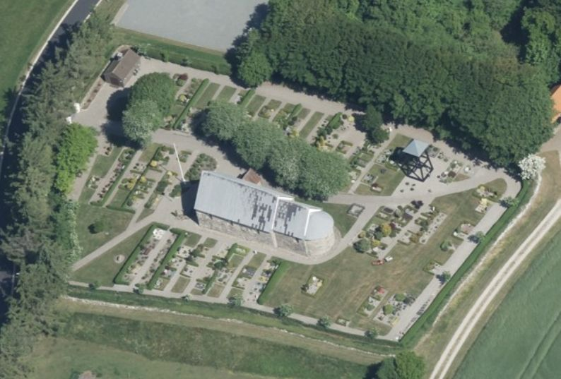
Dies ist ein Luftfoto vom 01.06.2023 - von Skråfoto - Lizenz: CC BY 4.0 - das die Kirche von Vang zeigt. Skråfoto ist eine Webanwendung, die von Klimadatastyrelsen weltweit kostenlos bereitgestellt wird. Die Aufnahmen werden seit 2017 alle zwei Jahre erneuert und neben einer Senkrechtaufnahme wird ein Schrägbild aus jeder Himmelsrichtung angeboten, das man über eine Adresssuche aufrufen kann.
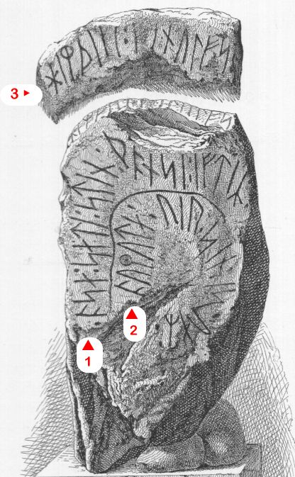
Es handelt sich um Dänemarks kleinsten Runenstein aus der eigentlichen Runensteinperiode. Die Inschrift findet sich auf einer Breitseite und zum Teil auf der Oberfläche. Der Stein wird in die Zeit von 970 - 1020 datiert. Die Inschrift liest sich beginnend in der äußeren Linie der Frontseite von links nach rechts. Darauf folgt die innere Linie der Frontseite ebenfalls von links nach rechts. Danach wird die Toplinie von links nach rechts gelesen und endet darüber.
Der Runenstein wird erstmals durch Erik Pontoppidan (der Jüngere, *03.09.1698 - 20.12.1764, dänisch-lutherischer Bischof, Theologe und Autor)
 Bildquelle:
Wikipedia - Lizenz:
Public Domain
Bildquelle:
Wikipedia - Lizenz:
Public Domain
in seinem Werk "Marmora Danica selectiora II" im Jahre 1741 auf S. 347 erwähnt, als er davon berichtet, dass ein gewisser Peter Brongaard vor vier Jahren - also 1737 - einen Runenstein unterhalb des Sjørring Kirchhofes gefunden hat.
Erik Pontoppidan führt ihn in seinem neuerlichen Werk "Den Danske Atlas" - Tomus V, Bind 1, IV. Cap., II, S. 452 (S. 28 (d) in der pdf-Datei) erneut an und nennt hier den (abweichenden) Namen des Finders "Peder Brogaard". Dazu fügt er, wie auch bereits in "Marmora Danica selectiora II" an, dass der Runenstein als Grundstein unter dessen Haus verwendet wurde.
Im Sommer 1841 ließ Prof. P. G. Thorsen (*07.08.1811 - 06.05.1883, Bibliothekar, Runenforscher und Historiker - link-LIVES - Artikel: Levnedsbeskrivelser af de ved Københavns Universitets Firehundredaarsfest promoverede Doktorer, Illustreret Tidende 1882, Nr. 1235 - vom 27.05.1833 / Grabstein in Varde / Eheschließung in Varde am 19. August 1848)
 Bildquelle: Fotografie zw. 1863-1900 von
Fotograf Budtz Müller (*26.12.1837 -
30.12.1884) -
Det Kgl. Biblioteks billedsamling - Lizenz:
Public Domain
Bildquelle: Fotografie zw. 1863-1900 von
Fotograf Budtz Müller (*26.12.1837 -
30.12.1884) -
Det Kgl. Biblioteks billedsamling - Lizenz:
Public Domain
Nachforschungen anstellen und vor Ort nach dem Runenstein suchen - ohne Erfolg! Trotzdem tauchte er kurz darauf, genau 100 Jahre nach dem Erstbericht von Erik Pontoppidan, in einer Steinmauer in Sjørring wieder auf. Der geschichtsinteressierte damalige Pfarrer von Vang, Pastor Johan Henrik Madelung (*02.12.1799 in Kongsberg/Norwegen - 31.10.1882 - Foto von dessen Grabstein - link-LIVES)

 Bildquelle: Fotografie um 1870 von
Fotograf Chr. Neuhaus (*13.03.1833 -
21.03.1907) -
Det Kgl. Biblioteks billedsamling - Lizenz:
Public Domain /
Skolehistorie - Lizenz:
Public Domain
Bildquelle: Fotografie um 1870 von
Fotograf Chr. Neuhaus (*13.03.1833 -
21.03.1907) -
Det Kgl. Biblioteks billedsamling - Lizenz:
Public Domain /
Skolehistorie - Lizenz:
Public Domain
kaufte ihn sofort und ließ ihn in das Waffenhaus seiner Kirche nach Vang bringen. Hier steht er noch heute, unmittelbar nach dem Eingang in der linken vorderen Ecke des Waffenhauses, auf einem gemauerten Fundament.
Dazu befindet sich in der Sammlung von P. G. Thorsen, die in der Königlichen Bibliothek in Kopenhagen verwahrt wird, in der Pappbox Nummer 7 die u.a. mehrseitige Notiz - meines Erachtens von P. G. Thorsen selbst verfasst - datiert auf den 05.12.1841 über die Wiederentdeckung und den Ankauf durch Pastor Johan Henrik Madelung.
P. G. Thorsens Sammlung - NKS 3296 kvart - wird in mehreren einzelnen Pappschachteln verwahrt und wird bezeichnet als: "P. G. Thorsens optegnelser, tegninger m.m. vedrørende runer og runemindesmærker" - überführt aus der Kopenhagener Universitätsbibliothek im Jahre 1929 - Gemäß Ministerialschreiben vom 04.03.1929 - früher benannt als Additamenta 612 kvart.
Von Rasmus Henrik Kruse (*07.08.1796 - 30.05.1877, Landschaftsmaler - link-LIVES)
 Bildquelle:
Det Kgl. Biblioteks billedsamling - Lizenz:
Public Domain
Bildquelle:
Det Kgl. Biblioteks billedsamling - Lizenz:
Public Domain
wurde dieser Runenstein in seiner Abhandlung "Nørrejyllands Mærkværdigheder i det 19. Aarhundrede - Hs. Bd 1-2 (med) Tillæg 1-2" thematisiert.


In seinem Band II hat er Aufzeichnungen zu dem Runenstein und dazwischen eine Zeichnung von ihm (No. 3).
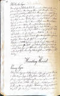 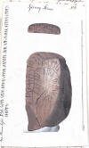 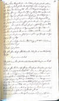
In dem 2. Ergänzungsband "Andet Tillæg, 1857" befasst er sich auf den S. 36/37 - "derligere Bemærkninger til Sjörring Stenen i Thÿe" mit dem Runenstein (Übersetzung: "Weitere Hinweise zum Sjörring Stenen in Thy").


Dieses Werk wird heute in Nationalmuseum in Kopenhagen, Antikvarisk-Topografisk Arkiv, aufbewahrt. Dort durfte ich am Dienstag, 27.09.2022, zu Gast sein und die vier Bände in Händen halten und fotografieren. Die obere Reihe mit den drei Text-/Bildwiedergaben - hatte ich irgendwie übersehen - wurde mir auf Anfrage vom Archiv per E-Mail nachträglich zugesandt. Mange tak!
Carl Christian Rafn (*16.01.1795 - 20.10.1864, Altertumsforscher - link LIVES - Bestattungsprotokoll)
 Bildquelle: Zeichner
Magnus Petersen -
Det Kgl. Biblioteks billedsamling - Lizenz:
Public Domain
Bildquelle: Zeichner
Magnus Petersen -
Det Kgl. Biblioteks billedsamling - Lizenz:
Public Domain
führt im Jahre 1856 in seinem Werk "Antiquités de l'Orient, monuments runographiques", S. 218, den Text als Runenzeichen an.
Dies geschah auf der Grundlage der Zeichnung von Rasmus Henrik Kruse (*07.08.1796 - 30.05.1877, Landschaftsmaler) aus dem Jahr 1841, sowie einer Zeichnung von N. G. Bondo (Niels Gumme Bondo, *16.03.1814 - 11.07.1892) Pfarrer von Vang und Thorup (ab 21.04.1848 bis 10.12.1858). In der "Antiquarisk tidsskrift - udg. af det Kongelige nordiske oldskrift-selskab - Ausgabe 1855-1857" heißt es dazu (übersetzt): "...Etatsraad Rafn, der in den archäologischen Fachzeitschriften der Gesellschaft eine Beschreibung mehrerer nordischer Runendenkmäler veröffentlicht hatte, gab eine Mitteilung über seine fortgesetzten Bemühungen in dieser Richtung. Durch Korrespondenz mit mehreren Personen in Schweden und Dänemark hatte er neue Korrektur- und Ergänzungskopien sowie Bilder mehrerer seltsamer Runeninschriften, deren Veröffentlichung durch die Gesellschaft er vorbereitet, erlangt." Dazu heißt es auf der S. 116 : "Sognepræsten til Vang og Thorup i Thyland, Thisted Amt, Hundborg Herred, N. G. Bondo, havde undersøgt Runestenen fra Sjøring og meddeelte Copie af samme" - übersetzt: "Der Pfarrer von Vang und Thorup in Thy, Distrikt Thisted, Region Hundborg, N. G. Bondo, hatte den Runenstein aus Sjøring untersucht und eine Zeichnung davon übermittelt."
Von Jacob Kornerup (*19.11.1825 - 09.03.1913, dänischer Archäologe und Zeichner aus Roskilde - link-LIVES)
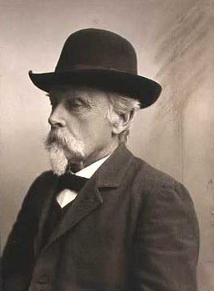
findet sich eine Zeichnung dieses Runensteins, die er unter seiner Unterschrift mit der Jahreszahl 1865 datiert hat. Sie wird heute in der Königlichen Bibliothek in Kopenhagen - Den sorte Diamant - im Nachlass von P. G. Thorsen, Pappschachtel Nummer 17, verwahrt.

Im "Antiqvarisk-Topografisk Arkiv" in Kopenhagen werden auch die Tagebücher von Jacob Kornerup aufbewahrt. Diese konnte ich bei meinem dortigen Besuch am 27.09.2022 sichten und fotografieren. Mit Datum vom 01.07.1865 hat er in dem entsprechenden Tagebuch von 1865, S. 25, diese Zeichnung / Notizen angelegt.
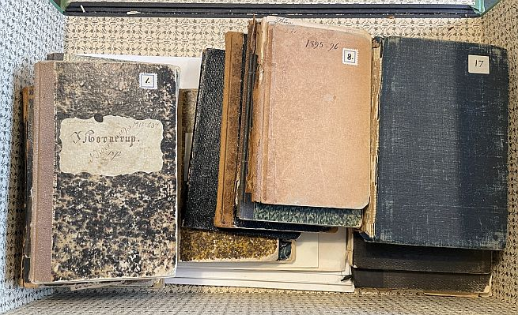

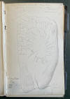
Innerhalb von P. G. Thorsens Aufzeichnungen findet sich in der Pappschachtel Nummer 7 weitere Aufzeichnungen zu diesem Runenstein. Zunächst eine handschriftliche Notiz, die auf den 17. Juli 1838 datiert ist. Daneben fanden sich vier weitere kleine Notizzettel mit Aufzeichnungen. Ich gehe davon aus, dass dies alles von ihm selbst niedergeschrieben wurde. Außerdem hat er zwei Pappstücke archiviert, die einen Abdruck einiger Runenzeichen wiedergeben. Diese kräftigen Papierstreifen geben offenbar von der unteren Linie die ersten beiden und dann die Runen 7-9 - von links gesehen - wieder.
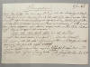 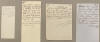 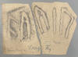


Durch George Stephens (*13.12.1813 - 09.08.1895, englischer Archäologe und Philologe)
 Bildquelle:
Minder fra min Virksomhed paa Arkæologiens
Omraade fra 1845 til 1908 von
Magnus Petersen (*04.09.1827 - 01.02.1917) auf der
Seite 265 - Lizenz:
Public Domain
Bildquelle:
Minder fra min Virksomhed paa Arkæologiens
Omraade fra 1845 til 1908 von
Magnus Petersen (*04.09.1827 - 01.02.1917) auf der
Seite 265 - Lizenz:
Public Domain
wurde in seinem Werk "The old-northern runic Monuments of Scandinavia and England, Volume II, 1867-68" auf der S. 745 lediglich dieser Eintrag vorgenommen.
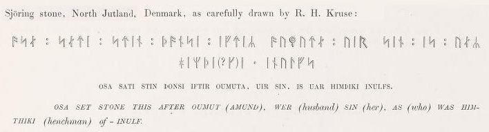
In dem dänischen Runenwerk aus dem Jahr 1880 von P. G. Thorsen (*07.08.1811 - 06.05.1883, Bibliothekar, Runenforscher und Historiker) - "De danske runemindesmærker beskrevne og forklarede, anden Afdeling, Jyllands Runemindesmærker, II Text, S. 195" findet sich die Beschreibung zum Runenstein. Diese Zeichnung von Prof. Julius Magnus Petersen (*04.09.1827 - 31.01.1917, Archäologischer Zeichner und Restaurator - link-LIVES - Bestattungsprotokoll)
 Bildquelle: Fotografie
von 1903 von Fotograf Marius Christensen
(*24.06.1874 -
25.06.1907) -
Det Kgl. Biblioteks billedsamling - Lizenz:
Public Domain
Bildquelle: Fotografie
von 1903 von Fotograf Marius Christensen
(*24.06.1874 -
25.06.1907) -
Det Kgl. Biblioteks billedsamling - Lizenz:
Public Domain
findet sich hingegen im Band "I. Afbildninger, 1879, Nr. 83" - Eigener Scan aus dem in meinem Besitz befindlichen Exemplar..
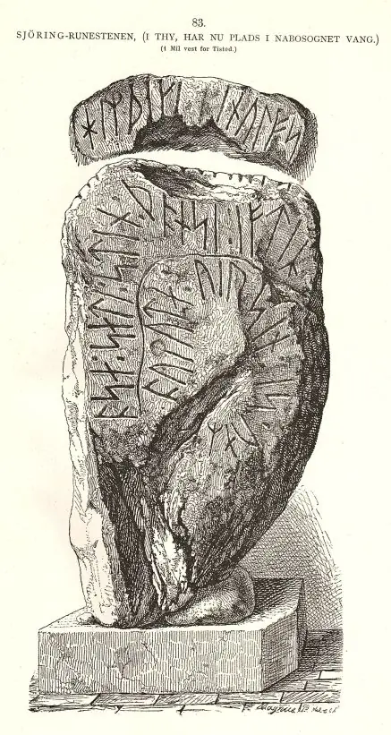
In der Sammlung von P. G. Thorsen fand ich bei meinem Besuch in der Königlichen Bibliothek in Kopenhagen am 27.09.2022 in der Pappschachtel mit der Nummer 17 diese tolle Zeichnung von Magnus Petersen die er auf den 08.09.1870 datiert hat.

Eine weitere Zeichnung von Magnus Petersen findet sich in dem großen Werk von Prof. Ludv. F. A. Wimmer (*07.02.1839 - 29.04.1920, Philologe und Runenforscher - link-LIVES - Politiets registerblade - Bestattungsprotokoll)
 Bildquelle:
Fotografie zw. 1877-1900 von Fotograf Hansen & Weller
-
Det Kgl. Biblioteks billedsamling - Lizenz:
Public Domain
Bildquelle:
Fotografie zw. 1877-1900 von Fotograf Hansen & Weller
-
Det Kgl. Biblioteks billedsamling - Lizenz:
Public Domain
" De danske runemindesmærker undersøgte og tolkede af Ludv. F. A. Wimmer, Andet Bind, Runestenene i Jylland og på øerne. 1899-1901, Nr. 38, S. 182" - eigener Scan aus der in meinem Besitz befindlichen Ausgabe. Er hat den Runenstein persönlich vor Ort am 18.August 1878 untersucht.
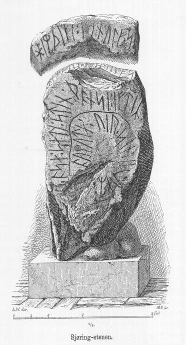
Ludv. F. A. Wimmer hat seine jahrelangen Aufzeichnungen der "Kgl. Bibliotek" in Kopenhagen überlassen. Ein Verzeichnis darüber wurde 1915 in Buchform herausgegeben - "Collectio runologica Wimmeriana: Fortegnelse over Ludv. F. A. Wimmers runologiske o.a. Samlinger i Det kgl. Bibliotek".
In seinen Unterlagen in der Königlichen Bibliothek in Kopenhagen befinden sich unter "III - Originaltegninger af de danske Runemindesmærker, udførte paa Undersøgelsesrejserne af Magn. Petersen og kontrollerede paa Stedet af Ludv. Wimmer, samt Prøvetryk af de paa Grundlag af de nævnte Tegninger, Aftryk o. s. v. til De danske Runemindesmærker" udførte Afbildninger med Wimmers Rettelser" zu dem Runenstein von Vang/Sjørring unter der Nr. 49 diese Aufzeichnungen von 1878, die ich am 27.09.2022 fotografieren durfte.


Die Zeichnung - von herausragender Qualität - ist handsigniert von Magnus Petersen und mit Datum vom 17.08.1878 versehen.

In der Abhandlung von Frederik Johannes Henrik Orluf (*04.02.1869 -11.09.1954, Lehrer und Hobbyforscher)
 Bildquelle:
Vejle Wiki - Lizenz:
Public Domain
Bildquelle:
Vejle Wiki - Lizenz:
Public Domain
Danske Studier 1926 - Tvorupstenen, den falske og den virkelige - S. 21-42, versucht der Autor darzulegen, dass der verschwundene Torup Stein - siehe unten - und der Sjørind Runenstein identisch sind. Erik Moltke hat dies später als unvernünftig bezeichnet (Aarbøger for nordisk oldkyndighed og historie 1936, S. 246-48). Seiner Auffassung nach hat Åse für ihre zwei Ehemänner jeweils einen Runenstein errichten lassen, wie es bei den Runensteinen von Tryggevælde (Seeland - heute in der Runenhalle des Nationalmuseums in Kopenhagen) und Glavendrup (Fünen) auch der Fall ist.
Erik Moltke (*04.04.1901 - 19.10.1984, Runologe, Historiker - link-LIVES)
 Bildquelle: Scan von Buchumschlag "Runerne i Danmark og ders
oprindelse" - Erik Moltke - 1976 - Lizenz:
CC-BY-SA
Bildquelle: Scan von Buchumschlag "Runerne i Danmark og ders
oprindelse" - Erik Moltke - 1976 - Lizenz:
CC-BY-SA
wurde diese sw Aufnahme am Sonntag, dem 14.06.1931 gefertigt.
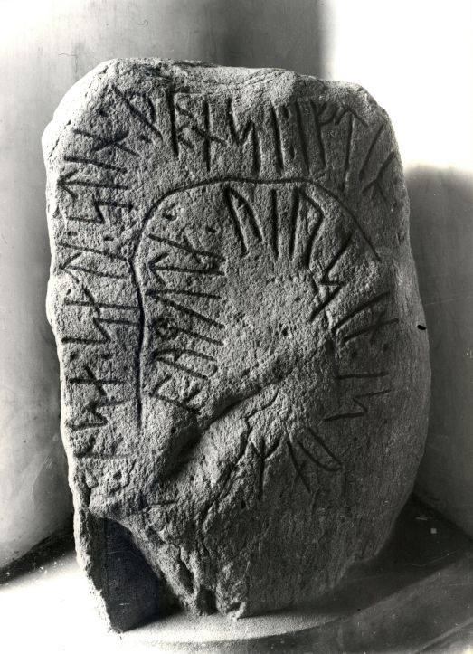
Lizenz: CC-BY-SA - Der Digitale Sammlung des Nationalmuseums Kopenhagen entlehnt.
Im Vorfeld zu dem 2016 erschienenen Buch von Lisbeth M. Imer (*1973, Runologin am Nationalmuseum Kopenhagen) "Danmarks Runesten - en fortælling" reiste sie mit dem Fotografen Roberto Fortuna zur Bestandsaufnahme durch die Lande. Diese beiden Fotos des Runenstein wurden am 19.03.2012 aufgenommen.
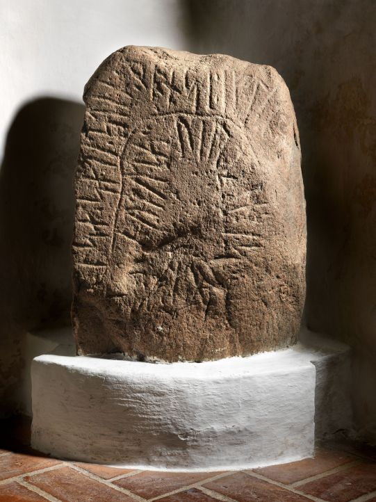
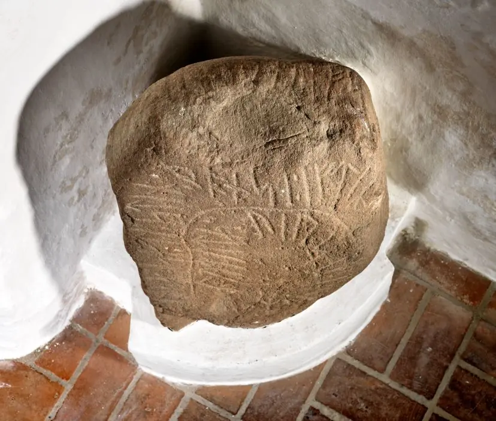
Beide Fotos: Lizenz: CC-BY-SA - Der Digitale Sammlung des Nationalmuseums Kopenhagen entlehnt.
Im Rahmen meiner 2022er Jütland Wikingertour nahm ich mir mal wieder die Zeit und war am Mittwoch, 01.06.2022, vor Ort.
Es handelt sich um eine Quadersteinkirche die im 11. - 12. Jahrhundert erbaut wurde. Sie steht auf einer Anhöhe und war früher weithin sichtbar. Die Kirche hat keinen Turm und besteht aus dem Kirchenschiff, dem Chor und der Apsis. Das Waffenhaus wurde in den Jahren 1794-95 ergänzt. Das äußere Erscheinungsbild der Kirche hat sich im Verlauf der Jahrhunderte mehrfach verändert. Der freistehende Glockenturm wurde erst im Februar 2020 in Betrieb genommen. Zuvor war ein Glockenturm mal links (1868) und auch mal rechts (1958) an die Kirche angebaut gewesen.
Bei meinem Besuch in Vang konnte ich diese Fotografien machen:
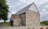 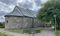 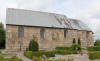 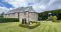 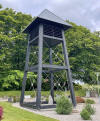


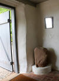 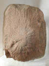 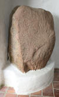 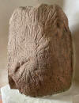 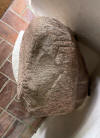


Das (schlechte) Foto im linken Frame habe ich bei meinem ersten Besuch in Vang im Sommer 1988 gefertigt. Solange - 34 Jahre - hat es doch tatsächlich gedauert, bis ich nun endlich mal wieder vorbeikommen konnte!
Die Informationen zu diesem Runenstein aus der dänischen Runendatenbank finden sich hier.
Der entsprechende Eintrag in "Fund og Fortidsminder" ist hier verlinkt. Darin ist inzwischen dieser Zustandsbericht des Steinrestaurators Leif Vognsen aus dem Jahr 2018 eingebettet.
Über diesen Link finden sich zu dem Runenstein Informationen des Forschungsprojektes "Runes" der Akademie der Wissenschaften zu Göttingen.
Auf der Webseite "http://www.biopix-foto.de/" findet sich dieses Foto des Runensteins mit rot nachgezeichneten Runen, was die Erkennbar-/Lesbarkeit deutlich verbessert.
Auf den Webseiten des Nationalmuseum in Kopenhagen - Danmarks Kirker - kann man u.a. eine in dänischer Sprache gehaltene 10-seitige, sw bebilderte Abhandlung als pdf-Datei zur Baugeschichte/Innenausstattung der Kirche von Vang allerdings bereits aus dem Jahr 1940 abrufen.
Vang Kirke - Broschüre als pdf-Datei - Udgivet af Vang Menighedsråd 2020 - in dänischer Sprache
Literaturhinweise:
Frederik Orluf - Danske Studier 1926 - Tvorupstenen, den falske og den virkelige - S. 21-42
H. Billeskov Jansen - Historisk Aarbog for Thisted Amt 1939 - Tvorup og Sjørind Runestene - S. 255-261
Nielsen, Jytte - Guld, kvinder og runesten - Historisk Årbog for Thy og Vester Hanherred 1989 - S. 111-116
Auf einem jetzt verschwundenen Runenstein, der 1627 in der Torup Kirche, etwa 3 km südwestlich von Vang stand und zuvor auf einem Hügel östlich der Kirche gefunden worden war, befand sich eine ähnliche Inschrift:
Åse errichtete diesen Stein zum Andenken an ...
... ihren guten, der getötet ward auf ... Heide
und ein Gefolgsmann saga iutis war.
Dieser Runenstein war ca. 2 m hoch und ca. 80 cm breit. Von dem Stein existiert noch eine Zeichnung aus der Zeit, als er in der Kirche von Torup stand. Gefertigt wurde sie durch Jon Skonvig im Jahr 1627. Es ist anzunehmen, dass es die gleiche Åse ist, die sich auf beiden Steinen nennt und dass die Steine für ihre beiden Ehemänner erstellt wurden.
Die Aufzeichnungen - sechs Handschriften - von Jon Skonvig (*1600 - 1664, Pfarrer und der Runenzeichner für Ole Worm) wurden teilweise digitalisert ins Internet eingestellt. In der sogenannten "Arnamagnæanske samling, AM 366-371 fol." (zu deutsch: Arnamagnäanische Sammlung) finden diese sich heute wieder.
Die entsprechende Seite 11r der A.M. fol 367 digitalisiert:
Der handschriftliche Text lautet: "Denne steen Findiss Vdi Aalborg stifft Vdi Tÿ in Hundboe herrit i Tuorup Kircke strax inden Kircke dørren, oc Er En haard graa Kamp 2 ½ all lang 1 all bred, denne steen sigiss att være Fløtt fra en hoÿ ligger østen for Kircken hoss itt lidett vand huor vdi ligger En holme kaldiss Ferssborg thi der sigiss at haffe standitt En borg vdi gamle dage, som ocsaa Endnu nochsom siuniss baade vold oc graffuer, der till med berettiss der, att haffuett haffr ocsaa i fordum dage gaaett ind vdi samme Vand saa mand med skibe kunde løbe der ind, der till med Er der vdi Sandbacken hoss samme Ferssgaard huilcken haffr sitt Naffn aff samme Ferssborg, Funditt baade Ancker blocke Aff Kaaber och andett Skibss Redskab, paa dette Ferssborg berettiss Att En Konge skulle haffue boett huilcken oc saa vor En Fribÿtter, oc den samme vnder denne steen att være begraffuen. Derforvden berettiss der ocsaa at En Vng printz aff Engeland skulle værett indkommed for vesterstrand (som ligger, der strax hoss) der hand vilde haffue dragett till danmark; och hanss Skib der dett der strandede, Er hand bleffuen, formedelst megett bÿtte hand haffde hoss sig aff gulkd och andett Klenodie, aff Indbÿggerne vdi Tÿ boendiss Ihielslagett oc ÿnkeligen Mÿrtt, och siden der saadant den hoÿe Øffrighed Er bleffuett bewust (!), Er hand bleffuen, vdi denne hoÿ hoss forbemelte Ferssborg liggendiss, hæderlig begraffuen, och denne steen, offr hannem att være opsett, oc siden Er steenen tagen samme hoÿ, oc indfløtt for Tuorup Kircke dør".
"www.handrit.org". Diese Seite bietet Zugang zu zahlreichen historischen Manuskripten. Sie wurde im April 2010 ins Leben gerufen, befindet sich noch immer im Aufbau, so dass auch nach und nach weitere Handschriften und Bilder eingestellt werden.

Am Mittwoch, 28.09.2022, war ich in der Universität Kopenhagen in der Arnamagnæanske Samling und durfte das Original - AM 367 fol. - in Händen halten und eingehend fotografieren. Man bat mich aber von einer Veröffentlichung meiner Fotos abzusehen und stattdessen auf die digitalisierte Handschrift über www.handrit.is zu verweisen.
Erik Moltke (*04.04.1901 - 19.10.1984, Runologe, Historiker)
Bildquelle: Scan von Buchumschlag "Runerne i Danmark og ders
oprindelse" - Erik Moltke - 1976 - Lizenz:
CC-BY-SA
hat in seinem Buch "Jon Skonvig og de andre runetegnere. Et bidrag til runologiens historie i Danmark og Norge, Band I - Billeder og Kildetext, 1956" auf Seite 58 die Zeichnung von Jon Skonvig dem Metallschnitt gegenübergestellt, den Ole Worm (*13.05.1588 - 31.08.1654, Arzt, Universalgelehrter und der Begründer der Runologie)
 Bildquelle:
Digitale Sammlung der Königlichen Bibliothek Kopenhagen -
Lizenz:
Public Domain
Bildquelle:
Digitale Sammlung der Königlichen Bibliothek Kopenhagen -
Lizenz:
Public Domain
in seinem Runenwerk Danicorum Monumentorum Libri Sex, Hafniae, 1643 verwendet hat. Jon Skonvig war nämlich im Auftrag von Ole Worm in den Landen unterwegs um Runendenkmäler u.a. zu erfassen und zu zeichnen.
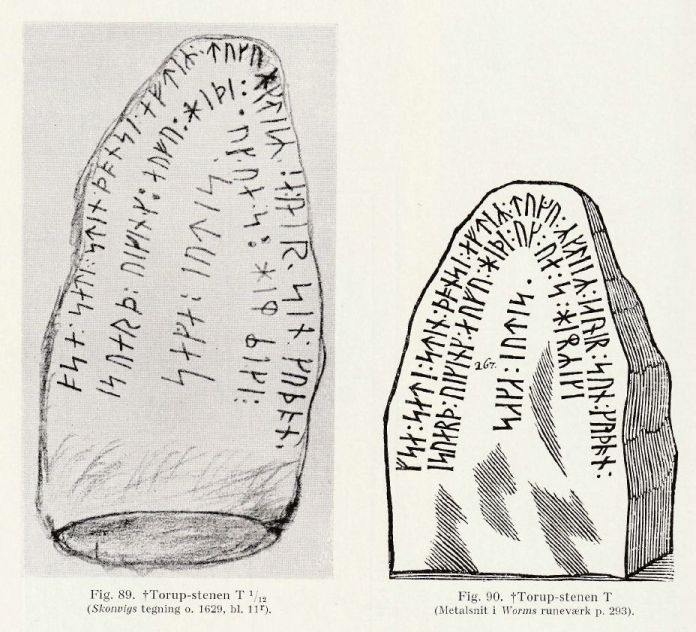
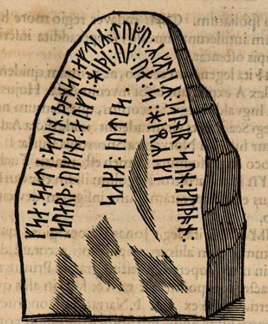
Ein Scan aus dem in meinem Besitz befindlichen Exemplar. Daneben ein Screenshot vom 07.11.2022 aus dieser digitalisierten Ausgabe der Bayerischen Staatsbibliothek (https://mdz-nbn-resolving.de/urn:nbn:de:bvb:12-bsb10800415-0).